30
This menu contains commands related to statistical measurements on image data, profile and histogram plotting and plugins related to image analysis.
30.1
Based on the selection type, calculates and displays on the Results Table↑ either area statistics, line lengths and angles, or point coordinates. Performed measurements can be specified in the dialog box.
Area statistics are calculated for the complete image if there is no selection or for a selected subregion defined by one of the Area Selection Tools↑. For linear selections (Straight, Segmented and Freehand lines, see Line Selection Tools↑) length and angle (straight lines only) are also calculated. For Point selections (see Point Tool↑ and Multi-point Tool↑), the X and Y coordinates are recorded. Note that will paint (invasively) a mark over the measured point in foreground color unless Mark Width in the Point Tool↑ options dialog box is set to zero.
With RGB images, results are calculated using brightness values. RGB pixels are converted to brightness values using the formula value = (red + green + blue) ⁄ 3 or value = 0.299 × red + 0.587 × green + 0.114 × blue if Weighted RGB Conversions is checked in .
Intensity statistics (Mean, Modal, Median, Min. & Max. Gray Value, Standard Deviation and Integrated Density) can be performed on area, line and multi-point selections. With lines, these parameters are calculated from the values of the pixels along the line (see ↓).
With area selections, the following parameters can measured: Area, Center of Mass, Centroid, Perimeter, Bounding Rectangle, Shape Descriptors, Fitted Ellipse, Feret’s Diameter, Skewness, Kurtosis and Area Fraction.
Results Table↑, , , , ,
30.2
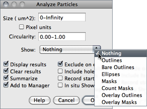
This command counts and measures objects in binary or thresholded images ( or ). Analysis is performed on the existing area selection or on the entire image if no selection is present.
It works by scanning the image or selection until it finds the edge of an object. It then outlines the object using the Wand Tool↑, measures it using the command, fills it to make it invisible, then resumes scanning until it reaches the end of the image or selection. Press Esc to abort this process.
|
Original (thresholded)
|
Exclude on Edges
|
Include Holes
|
Size: 0--50 Circ.: 0.5--1.0
|
|
Size: 0--∞ Circ.: 0.0--0.5
|
Size: 0--∞ Circ.: 0.3--0.5
|
Size: 0--∞ Circ.: 0.0--0.3
|
Size: 50--∞ Circ.: 0.5--1.0
|
Figure 36 Particle Analyzer (). Features of thresholded images can be extracted by specifying suitable Size and Circularity ranges and/or by choosing if particles should be traced by their outer edge or by flood filling (Include Holes checkbox).
Size Particles with size (area) outside the range specified in this field are ignored. Values may range between 0 and ‘Infinity’. For spatial scaled images (cf. ) values are expressed in physical size square units or in pixels if Pixel Units is checked. Enter a single value and particles smaller than that value will be ignored.
Circularity Particles with size circularity values outside the range specified in this field are also ignored. Circularity (4π × ([Area])/([Perimeter]2), see ) ranges from 0 (infinitely elongated polygon) to 1 (perfect circle).
Show This drop-down menu specifies which image (or overlay) should ImageJ display after the analysis (see Display options of ParticleAnalyzer↓). Size, color and background of text labels can be adjusted in the prompt. Non-overlay outputs can be adjusted in a macro by using call("ij.plugin.filter.ParticleAnalyzer.setFontSize", size); and call("ij.plugin.filter.ParticleAnalyzer.setLineWidth", width); or ParticleAnalyzer.setFontSize(size); ParticleAnalyzer.setLineWidth(width); in a script or plugin.
-
Nothing Neither images nor Overlays↑ will be displayed. Note that the particle analyzer will display a blank image when the count of detected particles is zero and Show is not Nothing.Outlines 8-bit image containing numbered outlines of the measured particles (gray levels: Outlines: 0; Labels: 1; Background: 255). If In situ Show is checked, the original image will be replaced by this image.Bare Outlines 8-bit image containing simple outlines of the measured particles without labels (graylevels: Outlines: 0; Background: 255). If In situ Show is checked, the original image will be replaced by this image.Masks 8-bit binary image containing filled outlines of the measured particles (gray levels: Masks: 0; Background: 255). If In situ Show is checked, the original image will be replaced by this image.Ellipses 8-bit binary image containing the best fit ellipse (cf. ) of each measured particle (gray levels: Ellipses: 0; Background: 255). If In situ Show is checked, the original image will be replaced by this image.Count Masks 16-bit image containing filled outlines of the measured particles painted with a grayscale value corresponding to the particle number. If In situ Show is checked, the original image will be replaced by this image.Overlay Outlines Displays outlines of the measured particles in the image overlay, removing previously added Overlays↑.Overlay Masks Displays filled outlines of the measured particles in the image overlay, removing previously added Overlays↑.
|
Original (thresholded)
|
Outlines
|
Bare Outlines
|
Masks
|
|
Ellipses
|
Count Masks
|
Overlay Outlines
|
Overlay Masks
|
Figure 37 Display options of ParticleAnalyzer (), IJ 1.44l. When displaying Overlays↑, size, color and background of text labels can be adjusted using
Display Results If checked, the measurements for each particle will be displayed in the Results Table↑.
Clear Results If checked, any previous measurements listed in the Results Table↑ will be cleared.
Summarize If checked, the particle count, total particle area, average particle size, area fraction and the mean of all parameters listed in the dialog box will be displayed in a separate Summary table. Note that while single images ‘Summaries’ are output to the same Summary table, stack Summaries are printed in dedicated tables (named Summary of [stack title]). Also, note that descriptive statistics on Results measurements can be obtained at any time using the command.
Add to Manager If checked, the measured particles will be added to the
Exclude on Edges If checked, particles touching the edge of the image (or selection) will be ignored.
Include Holes If checked, interior holes will be included. Disable this option to exclude interior holes and to measure particles enclosed by other particles. When this option is enabled, ImageJ finds the extent of each particle by tracing the outer edge. When it is disabled, ImageJ finds the extent by flood filling.
Record Starts This option allows plugins and macros to recreate particle outlines using the doWand(x,y) macro function. The CircularParticles macro demonstrates how to use this feature.
In situ Show If checked, the original image will be replaced by the binary mask specified in the Show drop-down menu. Note that this option does not apply to Overlay Outlines and Overlay Masks that are always displayed as non-destructive image Overlays↑ on the measured image.
30.3
For each column in the Results Table↑, calculates and displays the mean, standard deviation, minimum and maximum of the values in that column. This command is also available by right-clicking on the Results Table↑.
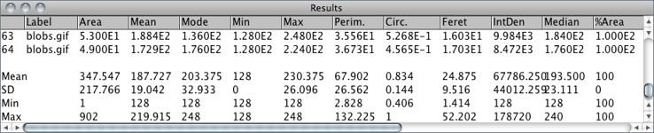
,
30.4

Produces a relative frequency histogram from the data of a chosen column of the Results table [40].
Use the List or Copy buttons to save the histogram data. Mouse over the histogram bars to read the counts for each bin on the window’s lower right corner. describes in more detail ImageJ’s histogram window.
This command is also available by right-clicking on the Results Table↑.
Parameter Specifies the parameter in the Results Table↑ to be analyzed.
Data points The number of rows that will be analyzed (informative).
Automatic binning If checked, ImageJ will use the method described by David Scott to assess the optimal histogram bin width (see Scott DW, Optimal and data-based histograms. Biometrika, 66(3):605--610, Jan 1979). If unchecked, the number of bins can be set with Specify bins and the starting and ending limits of the histogram with range.
Distribution Plotter, a macro that plots relative and cumulative frequencies on a double Y-axis graph
30.5
This command labels the active selection with the current measurement counter value, i.e., the number of rows present in the Results Table↑. Selection outline and label (at the selection centroid) are drawn invasively using current foreground/background colors. As for , use the command, or double click on the line tool, to change the width of selection’s outline.
Selections can be labelled if they were previously analyzed ( or commands) and the parameter Centroid (cf. ) extracted in the Results table.
30.6
Erases the results table and resets the measurement counter. This command is also available by right-clicking on the Results Table↑.
30.7
Use this dialog box to specify which measurements are recorded by , ROI Manager↓’s Measure command and Measurements are performed on the current selection, the entire active image if no selection is present. For thresholded images (), measurements can be restricted to highlighted pixels if Limit to Threshold is checked.
This command is also available by right-clicking on the Results Table↑.
The dialog contains two groups of checkboxes: The first group controls the type of measurements that are printed to the Results table. The second group controls measurement settings. The eighteen checkboxes of the first group are:
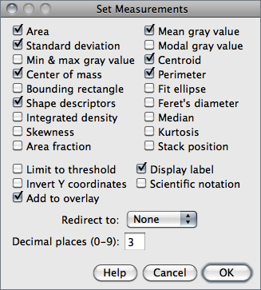
Area Area of selection in square pixels or in calibrated square units (e.g., mm2, μm2, etc.) if was used to spatially calibrate the image.
Mean gray value Average gray value within the selection. This is the sum of the gray values of all the pixels in the selection divided by the number of pixels. Reported in calibrated units (e.g., optical density) if was used to calibrate the image. For RGB images, the mean is calculated by converting each pixel to grayscale using the formula gray = (red + green + blue) ⁄ 3 or gray = 0.299 × red + 0.587 × green + 0.114 × blue if Weighted RGB Conversions is checked in
Standard deviation Standard deviation of the gray values used to generate the mean gray value. Uses the Results Table↑ heading StdDev.
Modal gray value Most frequently occurring gray value within the selection. Corresponds to the highest peak in the histogram. Uses the heading Mode.
Min & max gray level Minimum and maximum gray values within the selection.
Centroid The center point of the selection. This is the average of the x and y coordinates of all of the pixels in the image or selection. Uses the X and Y headings.
Center of mass This is the brightness-weighted average of the x and y coordinates all pixels in the image or selection. Uses the XM and YM headings. These coordinates are the first order spatial moments.
Perimeter The length of the outside boundary of the selection. Uses the heading Perim.. With IJ 1.44f and later, the perimeter of a composite selection is calculated by decomposing it into individual selections. Note that the composite perimeter and the sum of the individual perimeters may be different due to use of different calculation methods.
Bounding rectangle The smallest rectangle enclosing the selection. Uses the headings BX, BY, Width and Height, where BX and BY are the coordinates of the upper left corner of the rectangle.
Fit ellipse Fits an ellipse to the selection. Uses the headings Major, Minor and Angle. Major and Minor are the primary and secondary axis of the best fitting ellipse. Angle is the angle between the primary axis and a line parallel to the X-axis of the image. The coordinates of the center of the ellipse are displayed as X and Y if Centroid is checked. Note that ImageJ cannot calculate the major and minor axis lengths if Pixel Aspect Ratio in the dialog is not 1.0. There are several ways to view the fitted ellipse:
-
- The command replaces an area selection with the best fit ellipse.
- The DrawEllipse macro draws (destructively) the best fit ellipse and the major and minor axis.
- Select Ellipses from the Show: drop-down menu in the particle analyzer () and it will draw the ellipse for each particle in a separate window.
Shape descriptors Calculates and displays the following shape descriptors:
-
Circularity 4π × ([Area])/([Perimeter]2) with a value of 1.0 indicating a perfect circle. As the value approaches 0.0, it indicates an increasingly elongated shape. Values may not be valid for very small particles. Uses the heading Circ.Aspect ratio The aspect ratio of the particle’s fitted ellipse, i.e., ([Major Axis])/([Minor Axis]). If Fit Ellipse is selected the Major and Minor axis are displayed. Uses the heading AR.Roundness 4 × ([Area])/(π × [Major axis]2) or the inverse of Aspect Ratio. Uses the heading Round.Solidity ([Area])/([Convex area]); Note that the command makes an area selection convex.
Feret’s diameter The longest distance between any two points along the selection boundary, also known as maximum caliper. Uses the heading Feret. The angle (0--180 degrees) of the Feret’s diameter is displayed as FeretAngle, as well as the minimum caliper diameter (MinFeret). The length of the object’s projection in the X (FeretX) and Y (FeretY) direction is also displayed (see also Feret's Diameter macro and Chamfer distances and Geodesic diameters plugin).
Integrated density The sum of the values of the pixels in the image or selection. This is equivalent to the product of Area and Mean Gray Value. With IJ 1.44c and later, Raw integrated density (sum of pixel values) is displayed under the heading RawIntDen when Integrated density is enabled. The Dot Blot Analysis tutorial demonstrates how to use this option to analyze a dot blot assay.
Median The median value of the pixels in the image or selection.
Skewness The third order moment about the mean. The documentation for the Moment Calculator plugin explains how to interpret spatial moments. Uses the heading Skew.
Kurtosis The fourth order moment about the mean. Uses the heading Kurt.
Area fraction For thresholded images is the percentage of pixels in the image or selection that have been highlighted in red using . For non-thresholded images is the percentage of non-zero pixels. Uses the heading %Area.
Stack position The position (slice, channel and frame) in the stack or hyperstack of the selection. Uses the headings Slice, Ch and Frame.
n.b.: For line selections the heading Length is created. For straight line selections, Angle is recorded even if Fit Ellipse is unchecked. Also, note that measurements that do not apply to certain selection types may be listed as NaN, Infinity or − Infinity.
The second part of the dialog controls measurement settings:
Limit to threshold If checked, only thresholded pixels are included in measurement calculations. Use to set the threshold limits. This setting affects only thresholded images (see Settings and Preferences↑).
Display label If checked, the image name and slice number (for stacks) are recorded in the first column of the Results Table↑, e.g., mri-stack.tif:9. For renamed selections () or selections measured via ROI Manager’s measure command (see ), the selection label is appended, e.g., blobs.gif:0339-0163 or blobs.gif:mySelection.
Invert Y coordinates If checked, the XY origin is assumed to be the lower left corner of the image window instead of the upper left corner (see also ).
Scientific notation If checked, measurements are displayed in scientific notation, e.g., 1.48E2.
Add to Overlay If checked, measured ROIs are automatically added to the image overlay (see Overlays↑). Appearance of overlay selections can be adjusted using /
Redirect to The image selected from this popup menu will be used as the target for statistical calculations done by and commands. This feature allows you to outline a structure on one image and measure the intensity of the corresponding region in another image.
Decimal places This is the number of digits to the right of the decimal point in real numbers displayed in the Results Table↑ and in Histogram windows ().
30.8
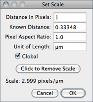
Use this dialog to define the spatial scale of the active image so measurement results can be presented in calibrated units, such as mm or μm.
Before using this command, use the straight line selection tool to make a line selection that corresponds to a known distance. Then, bring up the dialog, enter the Known Distance and unit of measurement, then click ‘OK’. The Distance in Pixels field will be automatically filled in based on the length of the line selection.
As described in , μ and Å symbols can be typed using AltM and AltShiftA, respectively. μm can also be defined as ‘um’, or ‘micron’.
- Measure the width and height (in pixels) of a digitized object with a known 1:1 aspect ratio.
- Enter the measured width (in pixels) in Distance in Pixels. Enter the known width in Known Distance.
- Calculate the aspect ratio by dividing the width by the height and enter it in Pixel Aspect Ratio
When Global is checked, the scale defined in this dialog is used for all opened images during the current session instead of just the active image, see 24: Global Calibrations↓.
Click to Remove Scale resets Distance in Pixels field and Know Distance to zero and the Unit of Length to ‘pixel’.
Tutorials showing how to use this command: Examples of Image Analysis Using ImageJ by Larry Reinking, Measuring DNA Contour Lengths and Spatial Calibration (Fiji). The Copy_Pixel_Size plugin
30.9
Use this dialog box to calibrate an image to a set of density standards, for example radioactive isotope standards or a calibrated optical density step tablet. The calibration procedure is done in three steps:
- Use to reset the measurement counter, use one of the Area Selection Tools↑ and to record the mean gray value of each of the standards.
- When finished making the measurements, select to display the dialog box. To calibrate the image, enter the known standard values in the right column. The left column will be already populated with the measured mean gray values. Select a curve fitting method from the popup menu, enter the unit of measurement, and click ‘OK’. If Show plot is checked, ImageJ will then display the calibration function on a separate window. Note that both columns must contain the same number of values.
- If the calibration function is not satisfactory, bring up the dialog box again and select a different curve fitting method.
In addition to the functions that can be chosen from the drop-down menu (described in ) two other functions are available that do not require any measurement of OD standards:
Uncalibrated OD Causes ImageJ to convert gray values from 8-bit images to uncalibrated optical density values using the function Unc. OD = log10(255⁄ Pixel value).
Pixel Inverter Linear function defined by Inverted pixel = Bit − depth − 1 − Pixel value, with Bit-depth being 255 for 8-bit images or 65535 for 16-bit images.
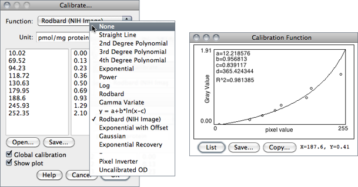
Optical Density Calibration tutorial, Global Calibrations↓, ,
24 Global Calibrations
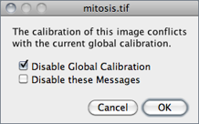
Calibration settings related to spatial (pixel width, height and voxel depth), temporal (frame interval) and luminance (brightness) information can be set globally, i.e., can be applied to all images opened during the current session instead of just the active image. The Global flag can be set in three dialog prompts:
- (pixel width, height, voxel depth, frame interval)
- (pixel width and height)
- (pixel intensity)
Once Global calibration is set, a ‘(G)’ is displayed in all image titles until ImageJ is closed. A warning message is displayed when a calibrated image with conflicting calibration is opened and the Global option is enabled.
Choose Disable Global Calibration to stop using global settings or Disable these Messages to keep respecting global settings, ignoring the calibration of the newly open image.
30.10 [J] [J] This shortcut is shown on Windows and Linux but not on Mac OS X as it conflicts with the system wide ‘Hide’ shortcut. However, the H shortcut (without holding down Cmd ) does work on OS X.
Calculates and displays a histogram of the distribution of gray values in the active image or selection.
The X-axis represents the possible gray values and the Y-axis shows the number of pixels found for each gray value. The horizontal LUT bar below the X-axis is scaled to reflect the display range of the image [41]. The total pixel Count is also calculated and displayed, as well as the Mean, standard deviation (StdDev), minimum (Min), maximum (Max) and modal (Mode) gray value.
Use the List or Copy buttons to save the histogram data. Click on Log to display a log-scaled version of the histogram (overlaid in gray).
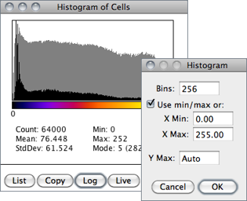
Click on Live to monitor the histogram while browsing stacks or while moving a ROI. Value / Count pairs (i.e., grayscale value corresponding to the X-axis cursor position / the number of pixels that have that intensity) are displayed on the bottom right while mousing over the histogram window.
With RGB images, the default histogram is calculated by converting each pixel to grayscale using the formula gray = (red + green + blue) ⁄ 3 or gray = 0.299 × red + 0.587 × green + 0.114 × blue if Weighted RGB Conversions is checked in . However, single-channel RGB histograms can be obtained by repetitively clicking on the RGB button.
With 16-bit images, the range of gray values between the Min and Max values is divided into 256 bins. With 32-bit images, the number of bins is specified in the depicted dialog box.
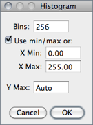
Bins Specifies the number of bins.
Use min/max If checked, the X-axis range is determined by the minimum and maximum values in the image or selection. If unchecked, X Min and X Max values can be or specified to fix the X-axis range.
Y Max Fixes the Y-axis range. Type ‘Auto’ to have the range determined by the largest bin count.
The getHistogram() and Plot.getValues() macro functions can be used to get the ‘value’ and ‘Count’ data displayed when you click the List button (cf. Obtaining Histogram Lists↓).
// 1. Single images:
run("Blobs (25K)");
getHistogram(values, counts, 256);
for (i=0; i<values.length; i++)
print(values[i], counts[i]);
// 2. Entire stacks:
run("T1 Head (2.4M, 16-bits)");
run("Histogram", "stack");
Plot.getValues(values, counts);
for (i=0; i<values.length; i++)
print(values[i], counts[i]);
30.11
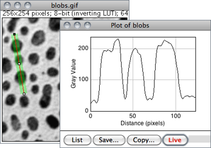
Displays a two-dimensional graph of the intensities of pixels along a line or rectangular selection. The X-axis represents distance along the line and the Y-axis is the pixel intensity. NaNs values in 32-bit images (see Image Types and Formats↑) are ignored.
For rectangular selections or line selections wider than one pixel, displays a ‘column average plot’, where the X-axis represents the horizontal distance through the selection and the Y-axis the vertically averaged pixel intensity.
To average horizontally, hold Alt K or check Vertical Profile in . For real-time examinations, activate Live mode to continuously update the profile as the selection is moved or resized.
To obtain profiles of several selections in a single plot use the ROI Manager’s Multi Plot command (). Other types of area selections such as oval or freehand ROIs can be profiled by first running , which will convert these ROIs to line selections.
Use the List, Save... or Copy... buttons to view and save the profile data. Use to adjust how plots are generated.
Rectangular Selection Tool↑, Line Selection Tools↑, , , Dynamic Profiler, Oval Profile Plot, Radial Profile Plot, Radial Profile Extended plugins, StackProfilePlot macro
30.12
Displays a three-dimensional graph of the intensities of pixels in a grayscale or pseudo color image (non-RGB images). The plot is based on the existing rectangular selection or on the entire image if no selection is present. A stack of plots can be produced when the source image is a stack or hyperstack. In this case, closing the plot stack window will abort the plotting process.
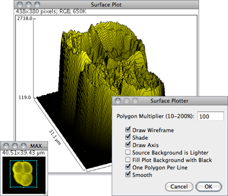
Polygon Multiplier Adjusts the number of profiles used to generate the plot.
Draw Wireframe If checked, the outline of each profile will be drawn in black.
Shade If checked, a shaded plot will be generated using the LUT of source image.
Draw Axis If checked, the three axis will be drawn and labelled.
Source Background is Lighter If checked, lighter areas in the source image will represent lower elevations (valleys) while darker areas in the source image will represent higher elevations (peaks).
Fill Plot Background with Black If checked, the plot is drawn with a black background, otherwise white will be used.
One Polygon Per Line If checked, all polygons will be drawn.
Smooth If checked, sharp fluctuations will be smoothed. Note that some plots can be further improved by adjusting the contrast of the source image or smoothing it.
, Interactive 3D Surface Plot plugin (it works with all image types and viewing angle, perspective, scale, lighting and smoothing can be interactively adjusted), 3D Color Inspector/Color Histogram
30.13
Use the commands in this submenu to analyze one-dimensional electrophoretic gels. These commands use a simple graphical method that involves generating lane profile plots, drawing lines to enclose peaks of interest, and then measuring peak areas (i.e., definite integrals) using the Wand Tool…↑. Note that this technique cannot be used to compare bands on different gels unless gels are calibrated to known standards.
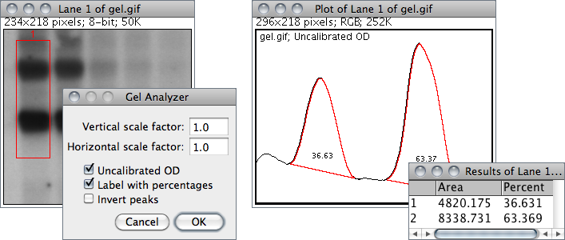
The commands listed in this submenu are:
Select First Lane 1 Requires a rectangular selection. Note that lanes are assumed to be vertical unless the width of the initial selection is at least twice its height.
Select Next Lane 2 To be used after the first rectangular ROI is moved over the adjacent lanes. Note that all selections must have the same dimensions.
Plot Lanes 3 Generates the lane profile plots. ImageJ assumes that only one plot is created per analysis. As a consequence, re-running this command more than once within the same analysis will cause an error message: “You must first use the ‘Select First Lane’ command”. To recreate plotted profiles use the command.
Re-plot Lanes Recreates the lane profile plots. If has not yet been run an error message is displayed: “The data needed to re-plot the lanes is not available”.
Reset Resets the analysis.
Label Peaks Uses the area measurements obtained with the Wand Tool↑ to label lane peaks (see ).
Gel Analyzer Options… Use this dialog to control the behavior of the Gel Analyzer.
-
Vertical / Horizontal scale factor Specifies the scale factor at which the lane profile plots are displayed.Uncalibrated OD If checked, ImageJ will convert gray values to uncalibrated optical density values using the function: Unc. OD = log10(255⁄pixel value). Note that images can be calibrated to, e.g., a calibrated optical density step tablet using the command.Label With Percentages If checked, the Label Peaks command will print to the Results table the peak percentage and use it to label the plot. The percentage value is obtained by dividing the area of each peak by the sum of all measured peaks from all lanes.Invert Peaks If checked, peaks will be inverted, i.e, bands darker than background will have positive peaks, bands lighter than background will have negative peaks. This setting does not change the analysis (see ).
For practice, refer to the video tutorial on the ImageJ wikipage and use the sample image (1--D gel) to perform the following steps. Note that a copy of the gel image with the lane outlines can be created at any point using the command.
- Use the rectangular selection tool to outline the first lane. This should be the left most lane if the lanes are vertical or the top lane if the lanes are horizontal.
- Select ( 1 ) and the lane will be outlined and ‘Lane 1 selected’ displayed in the status bar.
- Move the rectangular selection right to the next lane (or down if the lanes are horizontal) and select ( 2 ). The selected lane is outlined and labelled, and ‘Lane n selected’ is displayed in the status bar.
- Repeat the previous step for each remaining lane.
- Select ( 3 ) to generate the lane profile plots.
- Use the Straight Line Selection Tool↑ to draw base lines and/or drop lines so that each peak of interest defines a closed area (ImageJ will automatically switch to the Straight Line tool). Note that you can hold Shift to constrain lines to be either horizontal or vertical. To access to all the lanes, it may be necessary to scroll the image vertically using the Scrolling Tool↑ (Hold down the space bar to temporarily switch to this tool).
- For each peak, measure the size by clicking inside the peak with the Wand Tool↑. If necessary, scroll the image vertically by holding down the space bar and dragging.
- Select to label each measured peak with its size as a percent of the total size of the measured peaks.
, SinglePanelGelAnalyzer macro, Video tutorial on ImageJ wikipage, Luke Miller's tutorial, Dot Blot Analysis, Dot Blot Analyzer toolset
30.14
This submenu provides access to various image analysis plugins.
30.14.1
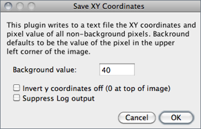
Writes to a text file the XY coordinates and pixel value of all non-background pixels in the active image. Background is assumed to be the value of the pixel at the upper left corner of the image. For grayscale images, writes three values per line (x, y, and value), separated by spaces. For RGB images, writes five values per line (x, y, red, green and blue). The origin of the coordinate system is at the lower left corner of the image.
The number and percentage of non-background pixels is printed to the Log Window↑ if Suppress Log output is not checked.
30.14.2
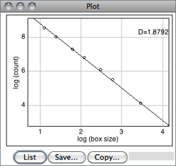
Estimates the fractal dimension (D) of a binary image. D can be used as a measure of pattern complexity (cell shape, vascularization, textures, etc.) and is specially relevant in cases in which Euclidean measures such as diameter or length are not good descriptors of complexity.
The command counts the number of boxes of an increasing size needed to cover a one pixel binary object boundary and implements the method described in T. G. Smith, Jr., G. D. Lange and W. B. Marks, Fractal Methods and Results in Cellular Morphology, J Neurosci Methods, 69:1123--126, 1996.
A plot is generated with the log of size on the X-axis and the log of count on the Y-axis and the data is fitted with a straight line. The slope (S) of the line is the negative of the fractal dimension, i.e., D = − slope. ‘Size’ (S) and ‘count’ (C) are printed to the Results Table↑. Refer to the source code for additional information.
30.14.3
This command uses the Particle Analyzer↑ to extract sets of coordinate data from digitized line graphs. The following procedure describes how to use it:
- Open the image containing the graph. For practice, use the sample image. Make sure your graph is a grayscale image (). will assume that the graph is displayed on a white background so images with darker backgrounds must be adjusted beforehand (see e.g., and ).
- Set background color to white using the Color Picker Tool↑ or the Color Picker window↑. Use any of the Area Selection Tools↑ as an eraser (press Backspace to erase) in order to isolate the single graph curve to be measured. Alternatively, use one of the drawing tools (Pencil↑ or Brush↑) to paint directly in background color.
- Open the tool (Shift T) and adjust the threshold levels so that the curve is highlighted in red.
- Select the curve with the Wand Tool↑ and run to erase everything on the canvas but the curve.
- With the line still highlighted by the threshold widget, run to get the XY coordinates of the traced line (you can hold down Alt while selecting the command to reveal the actual image that is processed ).
- On the newly obtained plot, select List, Copy or Save (these commands are described in ↑) to export the curve coordinates into a spreadsheet application.
The exported values are tabulated in pixel coordinates, unless the digitzed graph has been spatially calibrated using or .
Figure Calibration, a simple plugin to retrieve data from other types of graphs such as scatter plots and histograms
30.14.4
ImageJ’s CurveFitter provides a simple tool for fitting various functions to X- and Y-data, using an improved multithreaded simplex algorithm [42]. This strategy (an iterative method) is a kind of “trial and error” procedure in which the parameters of the fitting model are adjusted in a systematic way until the equation fits the data as close as required. It proceeds by: 1) Making first guesses of all the non-linear parameters; 2) Computing the model, comparing it to the data set and calculating a fitting error; 3) If the fitting error is large, the CurveFitter will systematically change parameters and return to step 3). The loop stops when the fitting accuracy is met (which in difficult cases may never happen).
The typical usage of this command is listed below:
- Tabular data is entered or copied in the input window or alternatively, a two column text file is opened by clicking on the Open button. Values may be separated by spaces, tabs, commas or semicolons.
- The function to be fit is selected from the drop-down menu. Several built-in functions are available (see CurveFitter’s built-in functions↓). User defined functions with up to six parameters are also possible by choosing *User-defined*.
- Once the Fit button is pressed, ImageJ displays a graph of the data with the fitted curve as depicted in CurveFitter↑. If Show Settings is checked, detailed information about the fit (including measures of goodness of fit) is printed to the Log Window↑ and the user is prompted to re-adjust the simplex fitting options, namely:
Maximum number of iterations The number of maximum iterations in which the CurveFitter will try to improve upon the parameter values to get the best fit. Usually the algorithm reaches optimal convergence before reaching the default value.Number of restarts The number of re-initializations the algorithm should perform from the initial best solution in case it gets “stuck” in a local minimum, i.e., when the algorithm fails to converge at an optimum solution. By default, the simplex is restarted twice. There is no limit for the number of restarts, apart form the maximum number of iterations.
- Click Apply to create a 32-bit copy (see Image Types and Formats↑) of the current image transformed with the chosen function.
Table 7 CurveFitter’s built-in functions. A more detailed summary of the CurveFitter’s abilities is available online. The complete documentation can be accessed through the ImageJ API. Most functions use linear regression to determine the first two coefficients directly, which generally increases the quality of the result [42]. As explained in ↑, simplex fitting options can be adjusted by selecting the Show settings checkbox. For polynomials, the proposed criteria are known to yield optimal convergence.
| Function | Formula | Comments |
| Straight line | y = a + bx | cf. Pixel Inverter () |
| 2nd--8th degree polynomial | y = a + bx + cx2 + … + ix8 | [xMin, xMax] should include 0 4th: should fulfill |xMean| < 2 × (xMax − xMin) 7th & 8th: should fulfill xMin + (xMax − xMin) ⁄ 2 ≈ 0 |
| Power | y = a × xb | Optionally, fit can be performed without linear regression during minimization |
| Exponential | y = a × ebx | |
| Exponential with offset | y = a × e − (bx) + c | |
| Exponential recovery | y = a × (1 − e( − bx)) + c | cf. FRAP_Profiler plugin |
| Log | y = a × ln(bx) | |
| y = a + b × ln(x − c) | ||
| Rodboard | y = (d + (a − d))/(1 + ((x)/(c))b) | In versions prior to IJ 1.46f, Rodbard (NIH Image) actually fits x = Rodbard(y), with the graph having x and y points exchanged [42] |
| Rodboard (NIH Image) |
x = (d + (a − d))/(1 + ((y)/(c))b) | |
| Inverse Rodboard | y = c × ((x − a)/(d − x))1⁄b | |
| Gaussian | y = a + (b − a) × e − ((x − c)2)/(2d2) | [42] |
| Gamma variate | y = b × (x − a)c × e − ((x − a)/(d)) |
30.14.5
The ROI (Region of Interest) Manager is a tool for working with multiple selections. Selections↑ can be from different locations on an image, from different slices of a stack or from different images. All selection types, including points, lines and text, are supported.
Add Click Add to add the current selection to the list, or press T, the keyboard shortcut for the command. The ROI manager creates a three part label. The first part (stacks only) is the slice number, the second is the Y-coordinate of the selection and the third is the X-coordinate. Click on a label to restore the associated selection to the current image. With stacks, the selection is restored to the slice it came from. Hold down Shift while clicking Add to ‘Add and Draw’. Hold down Alt while clicking Add to ‘Add and Rename’.
Install the ROIManagerMacros macro set and you will be able to add a selection by pressing 1, ‘add and rename’ by pressing 2, ‘add and draw’ by pressing 3 and ‘add and advance to the next slice’ by pressing 4.
Install the ROIManagerMacros macro set and you will be able to add a selection by pressing 1, ‘add and rename’ by pressing 2, ‘add and draw’ by pressing 3 and ‘add and advance to the next slice’ by pressing 4.
Update Replaces the selected ROI on the list with the current selection, updating the z/t-position of the ROI in Stacks↑ and Hyperstacks↑.
Delete Deletes the selected ROIs from the list. Deletes all ROIs if none is selected.
Rename… Renames the selected ROI. The chosen string will be used as label (Labels checkbox) if Use ROI names as labels is checked in the More≫Options… dialog. The selected ROI can also be renamed using the Properties… button. Note that while it is not possible to rename multiple ROIs simultaneous, you can use ROI Manager Tools to rename multiple ROIs.
Measure Measures the selected ROIs, or if none is selected, all ROIs on the list. Use to specify the measuring parameters.
Deselect Deselects any selected ROIs on the list. As mentioned in 25: Selecting ROIs in the ROI Manager↓, Deselect works as a Select All button, instructing commands to consider all ROIs in the list.
Properties… Similarly to , opens a dialog box in which is possible to assign a contour color (Stroke color) of a certain Width or a Filling color. Set Stroke width to 0 to have selections drawn using a width of one pixel regardless of the image magnification (see 19: Working with Zoomed Canvases↑).
As previously mentioned, selections can be either filled or contoured, but not both. The nine default selection colors (black, blue, cyan, green, magenta, orange, red, white, yellow) can be typed textually. Any other color must be specified using hex notation (see 20: Hexadecimal Color Values↑).
With Text Tool↑ selections, it is also possible to specify the Font size and Justification.
If multiple ROIs have been selected from the ROI Manager↑’s list (see 25: Selecting ROIs in the ROI Manager↓), properties will be applied to the specified Range of selections.
As previously mentioned, selections can be either filled or contoured, but not both. The nine default selection colors (black, blue, cyan, green, magenta, orange, red, white, yellow) can be typed textually. Any other color must be specified using hex notation (see 20: Hexadecimal Color Values↑).
With Text Tool↑ selections, it is also possible to specify the Font size and Justification.
If multiple ROIs have been selected from the ROI Manager↑’s list (see 25: Selecting ROIs in the ROI Manager↓), properties will be applied to the specified Range of selections.
Flatten [F] Alias for .
Show All Toggles the display of all ROI Manager Overlays↑. If Labels is active, ROIs will also be labelled. Once Show All is checked, ROIs can be re-activated by Alt-clicking, Control-clicking or long-pressing (1⁄4 second or longer). Re-activated selections that are moved or edited are automatically updated.
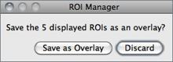
When Show All is active and the ROI Manager window is closed, a dialog box is displayed providing the option to save the displayed ROIs by moving them to the image overlay by running . When saving the image as tiff, Overlays↑ are stored in the TIFF header and can later be retrieved using .
Labels The ROI Manager now uses an overlay to display selections when in Show All modeToggles overlay labels displayed by Show All. Labels are customized using More≫Labels…, a shortcut to
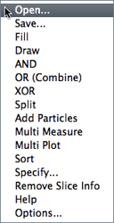
More≫ Displays a drop-down menu with several additional commands (this menu is also available when right-clicking on the ROI Manager’s list area):
-
Open… Opens a .roi file and adds it to the list or opens a ZIP archive (.zip file) and adds all the selections contained in it to the list.Save… Saves the selected ROI as a .roi file. If no ROIs are selected, saves all the ROI Manager selections in a ZIP archive.Fill Alias for .Draw Alias for .AND Uses the conjunction operator on the selected ROIs to create a composite selection. All ROIs are considered if none is selected.
OR (Combine) Uses the union operator on the selected ROIs to create a composite selection. Combines all ROIs if none is selected.
XOR Uses the exclusive or operator on the selected ROIs to create a composite selection [43]. All ROIs are considered if none is selected.
Split Splits the current selection (it must be a composite selection) into its component parts and adds them to the ROI Manager.
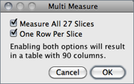
Add Particles Adds objects segmented by the particle analyzer to the ROI Manager. Requires that Record Starts be checked in the dialog box. Particle analyzer objects can also be added to the ROI Manager by checking Add to Manager in the Analyze Particles dialog box.
Multi Measure Measures all the ROIs on all slices in the stack, creating a Results Table↑ with either one row per slice (if One Row Per Slice is checked in the dialog) or one row per measurement [44].
Multi Plot Runs on the selected ROIs on a single graph [45]. All selections are plotted if none is selected. When plotting less than seven selections colored lines are drawn: blue (ROI 1), green (ROI 2), magenta (ROI 3), red (ROI 4), cyan (ROI 5) and yellow (ROI 6). Profiles with more selections are drawn in tones of gray.
While requires a line or rectangular selection, Multi Plot accepts all type of selections by first running , which converts area and freehand ROIs to line selections.
While requires a line or rectangular selection, Multi Plot accepts all type of selections by first running , which converts area and freehand ROIs to line selections.
Sort Sorts the list in alphanumeric order.
Specify… Alias for the prompt that allows the creation of area ROIs at specific locations.
Remove Slice Info Removes the information in the ROI names that associates them with particular stack slices (see ROI Manager↑ illustration).
Labels… Alias for , which allow the customization of selection labels when Show All is active.
When Show All↑ is active, Overlays↑ that are not stored in the ROI Manager will not be re-activated by Alt-clicking, Control-clicking or long-pressing (1⁄4 second or longer). This is a reminder that those overlay selections (added to the image overlay via ) are not under the control of the ROI Manager. You will be able to activate them as soon as Show All↑ is unchecked.
25 Selecting ROIs in the ROI Manager
For most ROI Manager↑ operations Deselect works as a Select All button, e.g., to measure all ROIs in manager one would press Deselect then Measure. In addition, it is possible to select contiguous ROIs in the ROI Manager list with a single Shift--click. Non-contiguous ROIs can be selected by Control--click (Command--click on Mac OS X).
Options… Displays a dialog box (depicted in ROI Manager↑) that allows you to set several ROI Manager settings:
-
Associate "Show All" ROIs with slices If checked, Show All will only reveal ROIs when browsing their respective slice. If unchecked, ROIs are shown in all stack slices.Restore ROIs centered If checked, ROIs opened by More≫Open… are centered on the image canvas. This option avoids loaded ROIs to be displayed out of boundaries when the image has been resized.Use ROI names as labels If checked, ROI names are used as selection labels when in the Labels checkbox is active. If unchecked, the ROI position in the Manager’s list is used. Selections can be renamed using either Rename or Properties…
ROI Manager Tools, RoiManagerMacros, ROI Color Coder, , , , 20: Hexadecimal Color Values↑, 13: Transferring Selections Between Images↑
30.14.6
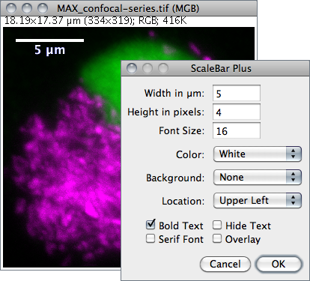
Draws a labelled spatial calibration bar.
Width Length of the bar in calibrated units.
Height Height of the bar in pixels.
Font Size Adjusts the font size of the scale bar label.
Color Adjusts the text color (see 18: Embedding Color Annotations in Grayscale Images↑).
Background Adjusts the filling color of the label text box.
Location Adjusts the position of the calibration bar. If there is a selection, the bar is initially drawn at the selection.
Bold Text / Serif Font Specify if label should be typeset in boldface/serif typeface.
Hide Text If checked the bar is drawn without label.
Overlay If checked the bar is created as a non-destructive image overlay (see Overlays↑ and submenu). If unchecked, the scale bar is drawn invasively.
30.14.7
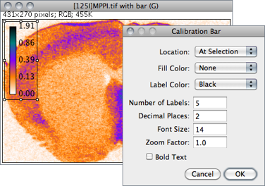
Creates an RGB copy of the current image and displays a labelled calibration bar on it (see ).
Location Defines the position of the bar. If an area selection is active, the bar is initially drawn at that selection.
Fill Color Defines the bar’s background color.
Label Color Adjusts the text color.
Number of Labels Adjusts the total number of values displayed.
Decimal Places Adjust the number of decimal places present in the labels.
Font Size Adjusts labels font size (labels are drawn bold if Bold Text is checked).
Zoom Factor Magnifies the entire calibration bar canvas. Enter a value less than 1 to reduce the bar size.
The Calibration Bar Macros can be used to add a calibration bar to a stack or to all the images and stacks in a folder.
30.14.8
Synchronizes mouse motion and input between multiple windows so that a ROI drawn in one image is replicated in all other Synchronized windows↓ [46]. A synchronization cursor indicates the location of the mouse across the synchronized window set.
Synchronized window set Images to be synchronized are specified in this list, containing all open images. To select a consecutive group of images, click the first item, press and hold down Shift, and then click the last item. Alternatively, click on the first item and drag it across. To select non-consecutive images, press and hold down Ctrl, then click each item to be selected. Use the Un/Synchronize All buttons to de/select all listed images.
Sync cursor If checked, the cursor is synchronized across selected images, with the mouse pointer changing to a red X-shape cursor. When unchecked, mouse movements become restricted to the active image.
Sync channels If checked, the channel slider (c) is synchronized across the synchronized window set.
Image coordinates If checked, spatial calibration units will be used instead of pixels coordinates. For proper registration, this option should be unchecked when syncing images with different pixel sizes (see ImageProperties… [P]↑).
Sync z-slices If checked, the depth slider (z) is synchronized across the synchronized window set.
Sync t-frames If checked, the frame slider (t) is synchronized across the synchronized window set.
Image scaling If checked, positions to different windows is translated via offscreen coordinates, providing correct registration at different zoom levels.